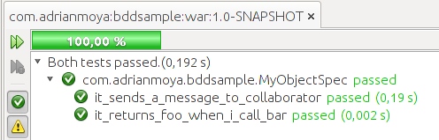

Adrian Moya / @adrianmoya
2013
Capacidad de realizar una tarea o acción
de la manera más rápida y eficiente
Iteraciones cortas y de duración fija predeterminada
Cada iteración es aprobada por el cliente, la retroalimentación se implementa en la(s) iteraciones siguientes
Principio 80/20 para implementar 20% de características que se usen el 80% de las veces
Prioridad a las necesidades del clientes
y el riesgo en el desarrollo
No buscamos remover la incertidumbre, sino adaptarnos a las necesidades cambiantes
Activamente involucrado, con capacidad de toma de decisiones
Más énfasis en las personas y sus habilidades
que en el proceso
Más rapidez y calidad
involucra disciplina de equipo y personal
Énfasis en la simplicidad y abierto al cambio, utilizando tecnologías ligeras
BDD nos ayuda a implementar ágil
El uso de ejemplos en múltiples niveles para crear un entendimiento compartido y sacar a flote la incertidumbre para construir software que importa
Ejemplo: 0, 1, 1, 2, 3, 5, 8...
Escenario: listar clientes con deuda por vencer
Dado que existen los siguientes clientes:
|cliente | fecha_vencimiento_deuda |
| Adrian | 30/05/2013 |
| Carlos | 15/06/2013 |
Y que la fecha actual es "28/05/2013"
Cuando solicito la lista de clientes con deuda por vencer
Entonces debo ver listado a "Adrian"
Pero no debo ver listado a "Carlos"
public class MarkdownSpec {
@Test
public void it_converts_plain_text_to_html_paragraphs() {
Markdown markdown = new Markdown();
String htmlResult = markdown.toHtml("Hi, there");
assertThat(htmlResult, is("Hi, there
"));
}
}
Aquel que genera valor a la organización
“Un proyecto genera valor de negocio cuando aumenta o protege la ganancia, o reduce los costos, en alineación con la estrategia de la organización.”
Andy Pols & Chris Matts - Agile 2008
Nos permite explorar el dominio del negocio en 3 niveles
Para alcanzar alguna característica que agrega valor de negocio
Como rol en el sistema (beneficiario)
Yo quiero/necesito realizar alguna acción en el sistema
Para poder acceder a mi información financiera
Como cliente del banco
Yo necesito poder autenticarme
Característica: Autenticación
Para poder acceder a mi información financiera
Como cliente del banco
Yo necesito poder autenticarme
Escenario: Sin tarjeta de débito activa (cliente nuevo)
Escenario: Tarjeta activa primera vez
Escenario: Autenticación normal sin seguridad adicional
Escenario: Autenticación normal con seguridad adicional
Escenario: ...
Expresado en un lenguaje simple:
Característica: Autenticación
Para poder acceder a mi información financiera
Como cliente del banco
Yo necesito poder autenticarme
Escenario: Sin tarjeta de débito activa (cliente nuevo)
Dado un cliente "Adrian" con cedula "12345" y tarjeta inactiva
Y que me encuentro en la página de autenticación
Cuando ingreso la cédula "12345"
Y presiono el botón "Autenticar"
Entonces debo ver un mensaje que me invite a activar mi tarjeta
BDD de historias ayuda a que el equipo de desarrollo tenga un entendimiento del negocio al mismo nivel que el cliente, forzandolo a que conteste las preguntas:
Pero más importante...
Java
Herramienta para aplicar BDD de historias
Maven pom.xml:
info.cukes
cucumber-junit
1.1.3
test
package com.adrianmoya.bddsample.cucumber;
import cucumber.api.junit.Cucumber;
import org.junit.runner.RunWith;
@RunWith(Cucumber.class)
@Cucumber.Options(format = {"pretty", "html:target/cucumber"},
features = {"src/test/resources/features/"},
glue = {"com.adrianmoya.bddsample.cucumber"})
public class CucumberIT {
}
package com.adrianmoya.bddsample.cucumber;
public class StepDefinition {
}
Característica: Autenticación
Para poder acceder a mi información financiera
Como cliente del banco
Yo necesito poder autenticarme
Escenario: Sin tarjeta de débito activa (cliente nuevo)
Dado un cliente "Adrian" con cedula "12345" y tarjeta inactiva
Y que me encuentro en la página de autenticación
Cuando ingreso la cédula "12345"
Y presiono el botón Autenticar
Entonces debo ver un mensaje que me invite a activar mi tarjeta
Creamos nuestro archivo de característica en src/test/resources/features/Autenticacion.feature
$ mvn verify
-------------------------------------------------------
T E S T S
-------------------------------------------------------
Running com.adrianmoya.bddsample.cucumber.CucumberIT
You can implement missing steps with the snippets below:
@Dado("^un cliente \"([^\"]*)\" con cedula \"([^\"]*)\" y tarjeta inactiva$")
public void un_cliente_con_cedula_y_tarjeta_inactiva(String arg1, String arg2) throws Throwable {
// Express the Regexp above with the code you wish you had
throw new PendingException();
}
#language: es
Característica: Autenticación
Para poder acceder a mi información financiera
Como cliente del banco
Yo necesito poder autenticarme
Escenario: Sin tarjeta de débito activa (cliente nuevo) # Autenticacion.feature:9
Dado un cliente "Adrian" con cedula "12345" y tarjeta inactiva
Y que me encuentro en la página de autenticación
Cuando ingreso la cédula "12345"
Y presiono el botón Autenticar
Entonces debo ver un mensaje que me invite a activar mi tarjeta
Tests run: 7, Failures: 0, Errors: 0, Skipped: 6, Time elapsed: 1.311 sec
Results :
Tests run: 7, Failures: 0, Errors: 0, Skipped: 6
package com.adrianmoya.bddsample.cucumber;
import cucumber.api.PendingException;
import cucumber.api.java.es.Cuando;
import cucumber.api.java.es.Dado;
import cucumber.api.java.es.Entonces;
public class StepDefinition {
@Dado("^un cliente \"([^\"]*)\" con cedula \"([^\"]*)\" y tarjeta inactiva$")
public void un_cliente_con_cedula_y_tarjeta_inactiva(String arg1, String arg2) throws Throwable {
// Express the Regexp above with the code you wish you had
throw new PendingException();
}
@Dado("^que me encuentro en la página de autenticación$")
public void que_me_encuentro_en_la_página_de_autenticación() throws Throwable {
// Express the Regexp above with the code you wish you had
throw new PendingException();
}
...si es una aplicación web, debemos usar un navegador...
Librería de automatización que nos ofrece un API único para controlar distintos tipos de navegadores
Maven pom.xml:
org.seleniumhq.selenium
selenium-java
2.33.0
test
import org.openqa.selenium.WebDriver;
import org.openqa.selenium.htmlunit.HtmlUnitDriver;
public class StepDefinition {
static final String APP_URL = "http://localhost:8080/javasample/";
WebDriver driver;
@Before
public void setup() {
this.driver = new HtmlUnitDriver();
}
@Dado("^que me encuentro en la página de autenticación$")
public void que_me_encuentro_en_la_página_de_autenticación() throws Throwable {
driver.get(APP_URL + "autenticacion/");
}
@Cuando("^ingreso la cédula \"([^\"]*)\"$")
public void ingreso_la_cédula(String cedula) throws Throwable {
WebElement campoCedula = this.driver.findElement(By.id("login_form:documentNumber"));
campoCedula.sendKeys(cedula);
}
@Cuando("^presiono el botón Autenticar$")
public void presiono_el_botón_Autenticar() throws Throwable {
WebElement button = this.driver.findElement(By.id("login_form:loginBtn"));
button.click();
}
Es hora de comenzar a codificar el sistema...
Nos permite describir como interactúan los objetos para resolver un problema, sus roles, responsabilidades y mensajes
...pero la realidad es...
Aumenta exponencialmente en las fases tardías del desarrollo
BDD de especificaciones es una técnica
que requiere mucha práctica
JUnit
Maven pom.xml:
junit
junit
4.11
test
Describimos un objeto mediante una clase
package com.adrianmoya.bddsample;
public class MyObjectSpec {
@Test
public void it_returns_foo_when_i_call_bar() {
//Dado
MyObject myObject = new MyObject();
//Cuando
String result = myObject.bar();
//Entonces
assertThat(result, is("foo"));
}
}
Ejecutamos las especificaciones
-------------------------------------------------------
T E S T S
-------------------------------------------------------
Running com.adrianmoya.bddsample.MyObjectSpec
Tests run: 1, Failures: 1, Errors: 0, Skipped: 0, Time elapsed: 0.088 sec <<< FAILURE!
it_returns_foo_when_i_call_bar(com.adrianmoya.bddsample.MyObjectSpec) Time elapsed: 0.02 sec <<< FAILURE!
java.lang.AssertionError:
Expected: is "foo"
but: was null
at org.hamcrest.MatcherAssert.assertThat(MatcherAssert.java:20)
at org.junit.Assert.assertThat(Assert.java:865)
at org.junit.Assert.assertThat(Assert.java:832)
at com.adrianmoya.bddsample.MyObjectSpec.it_returns_foo_when_i_call_bar(MyObjectSpec.java:15)
Nuestro código actual
package com.adrianmoya.bddsample;
class MyObject {
public MyObject() {
}
String bar() {
return null;
}
}
Implementamos el comportamiento esperado
package com.adrianmoya.bddsample;
class MyObject {
public MyObject() {
}
String bar() {
return "foo";
}
}
Ejecutamos las especificaciones
------------------------------------------------------- T E S T S ------------------------------------------------------- Running com.adrianmoya.bddsample.MyObjectSpec Tests run: 1, Failures: 0, Errors: 0, Skipped: 0, Time elapsed: 0.047 sec Results : Tests run: 1, Failures: 0, Errors: 0, Skipped: 0
Librería para construir dobles en Java
Maven pom.xml:
org.mockito
mockito-core
1.9.5
test
Agregamos una especificación
public class MyObjectSpec {
@Test
public void it_sends_a_message_to_collaborator(){
//Dado
MyCollaborator myCollaborator = mock(MyCollaborator.class);
MyObject myObject = new MyObject(myCollaborator);
//Cuando
myObject.bar();
//Entonces
verify(myCollaborator).sendMessage("Mensaje");
}
Ejecutamos las especificaciones
-------------------------------------------------------
T E S T S
-------------------------------------------------------
Running com.adrianmoya.bddsample.MyObjectSpec
Tests run: 2, Failures: 1, Errors: 0, Skipped: 0, Time elapsed: 0.227 sec <<< FAILURE!
it_sends_a_message_to_collaborator(com.adrianmoya.bddsample.MyObjectSpec) Time elapsed: 0.18 sec <<< FAILURE!
org.mockito.exceptions.verification.WantedButNotInvoked:
Wanted but not invoked:
myCollaborator.sendMessage("Mensaje");
-> at com.adrianmoya.bddsample.MyObjectSpec.it_sends_a_message_to_collaborator(MyObjectSpec.java:32)
Actually, there were zero interactions with this mock.
at com.adrianmoya.bddsample.MyObjectSpec.it_sends_a_message_to_collaborator(MyObjectSpec.java:32)
Implementamos el comportamiento esperado
class MyObject {
MyCollaborator collaborator;
public MyObject() {
this.collaborator = new MyCollaborator();
}
MyObject(MyCollaborator myCollaborator) {
this.collaborator = myCollaborator;
}
String bar() {
this.collaborator.sendMessage("Mensaje");
return "foo";
}
Ejecutamos las especificaciones
------------------------------------------------------- T E S T S ------------------------------------------------------- Running com.adrianmoya.bddsample.MyObjectSpec Tests run: 2, Failures: 0, Errors: 0, Skipped: 0, Time elapsed: 0.248 sec Results : Tests run: 2, Failures: 0, Errors: 0, Skipped: 0
Sitio de la comunidad - http://agilescolombia.org/
Próximos eventos - http://www.meetup.com/AgilesColombia/
Foro - https://groups.google.com/forum/?fromgroups#!forum/agiles-colombia
Sitio web - http://sparkta.co/
Entrenamiento, consultoria, talleres en temas ágiles